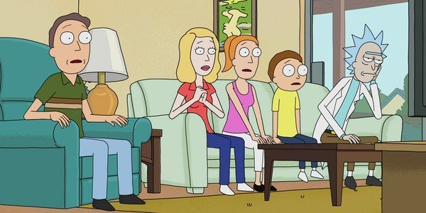
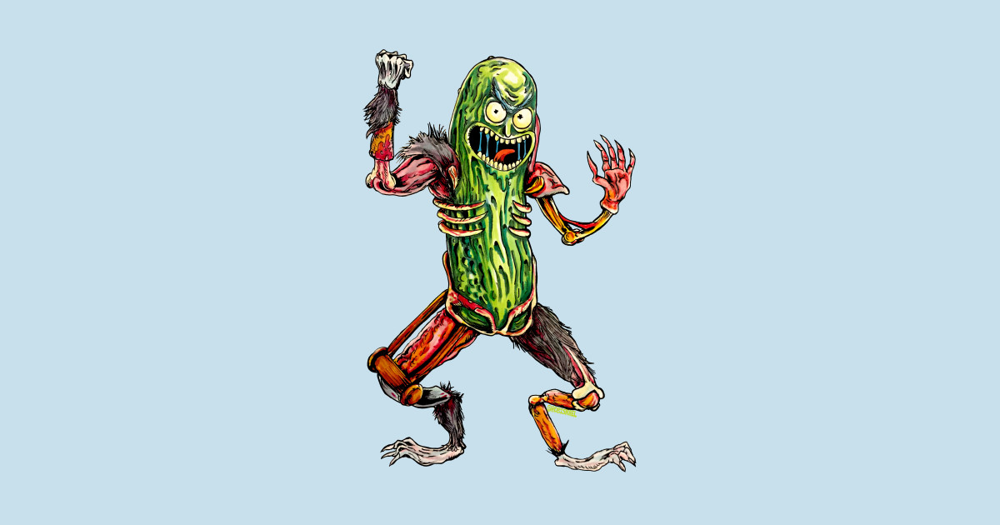
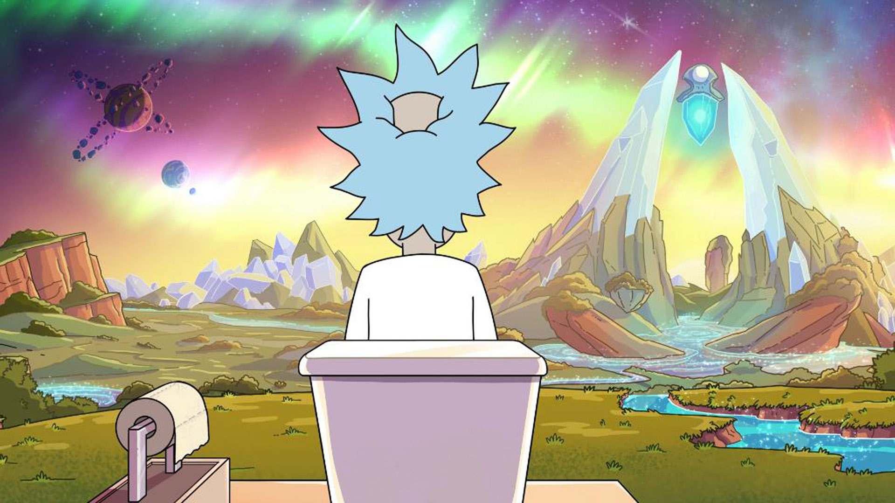

The show revolves around the adventures of the members of the Smith household, which consists of parents Jerry and Beth, their children Summer and Morty, and Beth's father, Rick Sanchez, who lives with them as a guest. According to Justin Roiland, the family lives outside of Seattle, Washington.[2] The adventures of Rick and Morty, however, take place across an infinite number of realities, with the characters travelling to other planets and dimensions through portals and Rick's flying car.
Rick is an eccentric and alcoholic mad scientist, who eschews many ordinary conventions such as school, marriage, love, and family. He frequently goes on adventures with his 14-year-old grandson, Morty, a kind-hearted but easily distressed boy, whose naïve but grounded moral compass plays counterpoint to Rick's Machiavellian ego. Morty's 17-year-old sister, Summer, is a more conventional teenager who worries about improving her status among her peers and sometimes follows Rick and Morty on their adventures. The kids' mother, Beth, is a generally level-headed person and assertive force in the household, though self-conscious about her professional role as a horse surgeon. She is dissatisfied with her marriage to Jerry, a simple-minded and insecure person, who disapproves of Rick's influence over his family.
Different versions of the characters inhabit other dimensions throughout the multiverse and their personal characteristics can vary from one reality to another. The show's original Rick identifies himself as "Rick Sanchez of Earth Dimension C-137", in reference to his original universe, but this does not necessarily apply to every other member of the Smith household. For instance, in the first-season episode "Rick Potion #9", after turning the entire world population into monsters, Rick and Morty move to a different dimension, leaving Summer, Beth and Jerry behind.
The general formula of Rick and Morty consists of the juxtaposition of two conflicting scenarios: an extremely selfish, alcoholic grandfather dragging his grandson along for interdimensional adventures, intercut with domestic family drama.[23][25] Co-creator Dan Harmon has described the series as a cross between Matt Groening's two shows The Simpsons and Futurama, balancing family life with heavy science fiction.[29] The series is inspired by British-style storytelling, as opposed to traditional American family TV stories.[21] Harmon has stated that his inspiration behind much of the concept and humor for the series comes from various British television series, such as The Hitchhiker's Guide to the Galaxy and Doctor Who. He figures that the audience will only understand developments from Morty's point of view, but stated "we don't want to be the companions. We want to hang out with the Doctor, we idolize the Doctor, but we don't think like him, and that's really interesting."[39]
Occasionally, characters will acknowledge an episode's narrative or hint at the presence of a fourth wall, suggesting that they are aware of the fact that they are characters of a TV show. Thereunder, Troy Patterson of The New Yorker notes that Rick and Morty "supplies an artful answer to the question of what follows postmodernism: a decadent regurgitation of all its tropes, all at once, leavened by some humanistic wistfulness."[40] Sean Sebastian of Junkee says that the show can be both hilarious and deeply disturbing at the same time as it excels at the "intersection between big ideas, flippancy and wit."[41]
Rick and Morty has been described as "a never-ending fart joke wrapped around a studied look into nihilism".[42] The series addresses the insignificance of human existence as compared to the size of the universe, with no recognizable divine presence, as described by Lovecraft's philosophy of cosmicism. The characters of the show deal with cosmic horror and existential dread, either by asserting the utility of science over magic or by choosing a life in ignorant bliss.[43] However, as Joachim Heijndermans of Geeks notes, none of them appear able to handle the absurd and chaotic nature of the universe, as Jerry gets by through denial, and Rick is a "depressed, substance-addicted, suicidal mess".[44]
Harmon describes Rick as a self-interested anarchist, who doesn't like being told what to do.[45] He believes that the character's life on a larger scale has caused him mental illness,[39] and opines that "the knowledge that nothing matters—while accurate—gets you nowhere".[46] Matthew Bulger of The Humanist notes that the creators of the series are trying to communicate the message that we need to focus on human relationships and not preoccupy our minds with unanswerable questions, in order to find a sense of purpose and live a better life.[47] Eric Armstrong of The New Republic notes that Morty represents the audience, as he is "mostly there to react to Rick's deranged schemes". The character is transformed by the truths he discovers during his interdimensional adventures with his grandfather. However, instead of sinking into depression, Morty accepts these truths that empower him to value his own life.[48]
“ Nobody exists on purpose, nobody belongs anywhere, everybody's gonna die. Come watch TV. ” — Morty Smith, in the episode "Rixty Minutes"